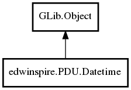

Object
- Datetime
- Gmt
- day_of_month
- day_of_week
- day_of_year
- hour
- is_daylight_savings
- microsecond
- minute
- month
- second
- seconds
- timezone_abbreviation
- week_numbering_year
- week_of_year
- year
- Datetime
- Datetime.from_timeval_local
- Datetime.from_timeval_utc
- Datetime.from_unix_local
- Datetime.from_unix_utc
- Datetime.from_values
- Datetime.local
- Datetime.now
- Datetime.now_local
- Datetime.now_utc
- Datetime.utc
- add_days
- add_full
- add_hours
- add_minutes
- add_months
- add_seconds
- add_weeks
- add_years
- compare
- format
- get_ymd
- hash
- set_values
- to_local
- to_string
- to_timeval
- to_timezone
- to_unix
- to_utc
Datetime
Object Hierarchy:
Description:
public class Datetime :
All known sub-classes:

Namespace: edwinspire.PDU
Package: libspire_gsm
Content:
Properties:
- public
intGmt { set; get; } - public
intday_of_month { set; get; } - public
intday_of_week { get; } - public
intday_of_year { get; } - public
inthour { set; get; } - public
boolis_daylight_savings { get; } - public
intmicrosecond { get; } - public
intminute { set; get; } - public
intmonth { set; get; } - public
intsecond { set; get; } - public
doubleseconds { get; } - public
stringtimezone_abbreviation { get; } - public
intweek_numbering_year { get; } - public
intweek_of_year { get; } - public
intyear { set; get; }
Creation methods:
- public Datetime (
TimeZonetz,intyear,intmonth,intday,inthour,intminute,doubleseconds) - public Datetime.from_timeval_local (
TimeValtv) - public Datetime.from_timeval_utc (
TimeValtv) - public Datetime.from_unix_local (
int64t) - public Datetime.from_unix_utc (
int64t) - public Datetime.from_values (
intyear,intmonth,intday,inthour = 0,intminute = 0,doubleseconds = 0,intgmt = 0) - public Datetime.local (
intyear,intmonth,intday,inthour,intminute,doubleseconds) - public Datetime.now (
TimeZonetz) - public Datetime.now_local ()
- public Datetime.now_utc ()
- public Datetime.utc (
intyear,intmonth,intday,inthour,intminute,doubleseconds)
Methods:
- public void add_days (
intdays) - public void add_full (
intyears,intmonths,intdays,inthours = 0,intminutes = 0,doubleseconds = 0) - public void add_hours (
inthours) - public void add_minutes (
intMinutes) - public void add_months (
intmonths) - public void add_seconds (
doubleSeconds) - public void add_weeks (
intweeks) - public void add_years (
intyears) - public
intcompare (DateTimedt) - public
stringformat (stringformat) - public void get_ymd (out
intyear, outintmonth, outintday) - public
uinthash () - public void set_values (
intyear,intmonth,intday,inthour = 0,intminute = 0,doubleseconds = 0,intgmt = 0) - public void to_local ()
- public
stringto_string () - public
boolto_timeval (outTimeValtv) - public void to_timezone (
TimeZonetz) - public
int64to_unix () - public void to_utc ()